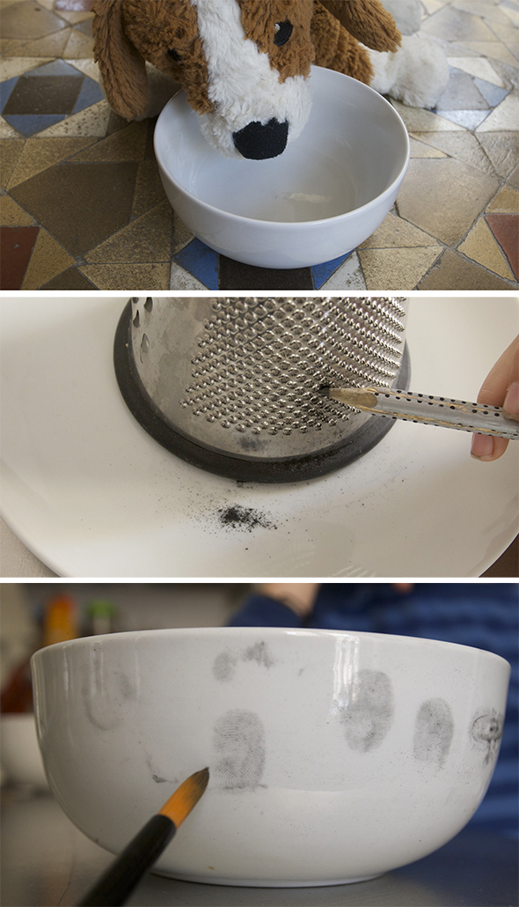

Un caso para mis detectives: alguien ha envenenado al perro. Con polvo de grafito encuentran enseguida las huellas dactilares del villano.
Truco: si te pones un poco de crema en las manos antes de tocar algo, las huellas se ven mejor.
El perro sobrevivió :-)
